Peruvian economist
and researcher
based in Barcelona.
I'm interested in the intersection of macroeconomics, growth, and development. I feel comfortable working with large datasets, quantitative models, and computational methods to study economic and public policy questions.
My previous experience includes macroeconomic forecasting, development research, quantitative policy modelling, and academic publishing. I have worked with APOYO Consultoría, GRADE, sistemaFutura, and ECONOMÍA Journal.
Since September 2026, I have been working with Manuel García-Santana as a Predoctoral Research Fellow at Universitat Pompeu Fabra on microGtoY, an ERC Consolidator Grant studying how public procurement shapes firms and aggregate economic outcomes.
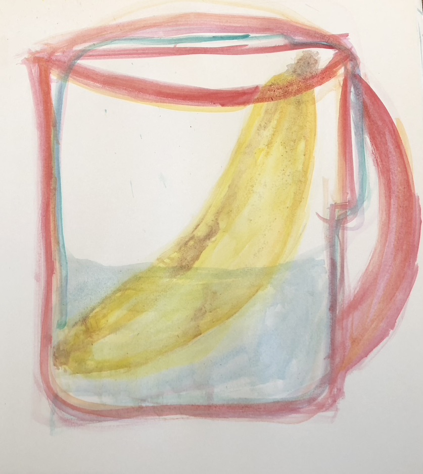
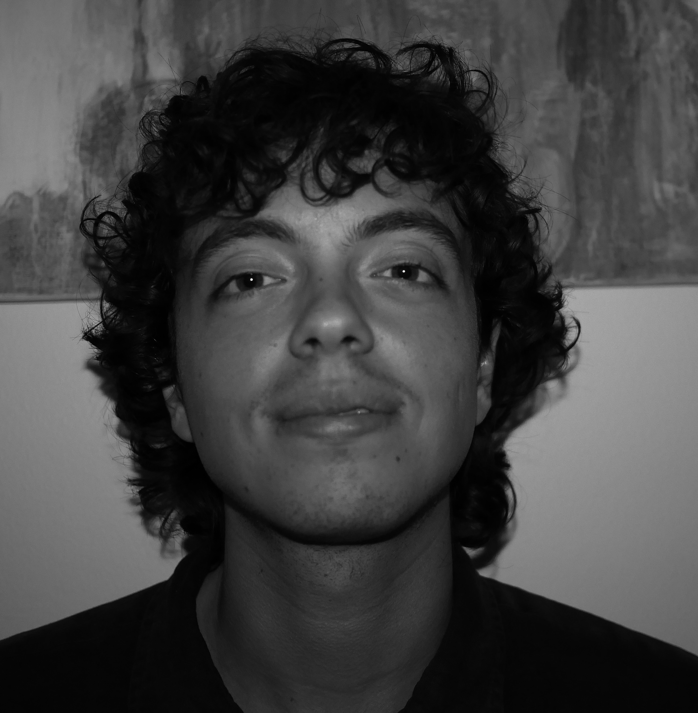
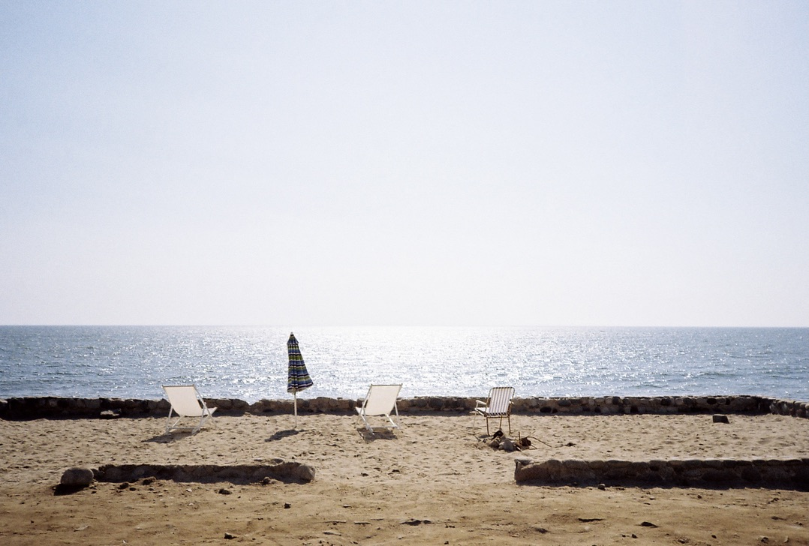
Background
Experience
- September 2026—
- Predoctoral Research Fellow
With Manuel García-Santana at Universitat Pompeu Fabra - February 2024—
- Assistant Editor
ECONOMÍA Journal
Pontificia Universidad Católica del Perú - October 2024–September 2025
- Research and Policy Analyst
sistemaFutura - April 2024–June 2024
- Research Assistant
Group for the Analysis of Development — GRADE - August 2023–December 2023
- Macroeconomic Analysis Intern
APOYO Consultoría
Education
- 2025–2026
- Barcelona School of Economics
Master Program in Economics
International Trade, Finance and Development - 2020–2024
- Pontificia Universidad Católica del Perú
Bachelor’s in Economics
Ranked first in the graduating class of 2024 - 2023
- University of Helsinki
Exchange Semester in Economics
Selected research
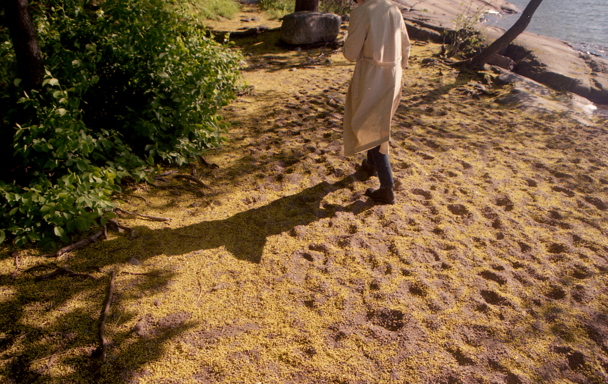
More pictures and drawings
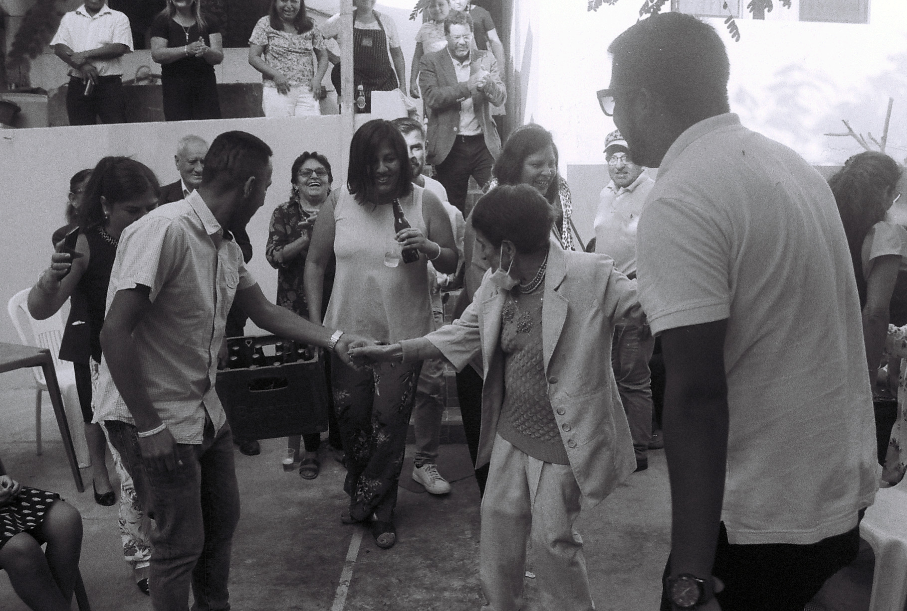
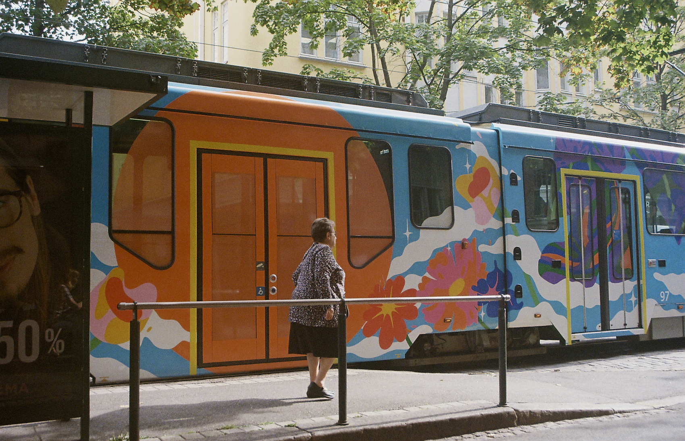
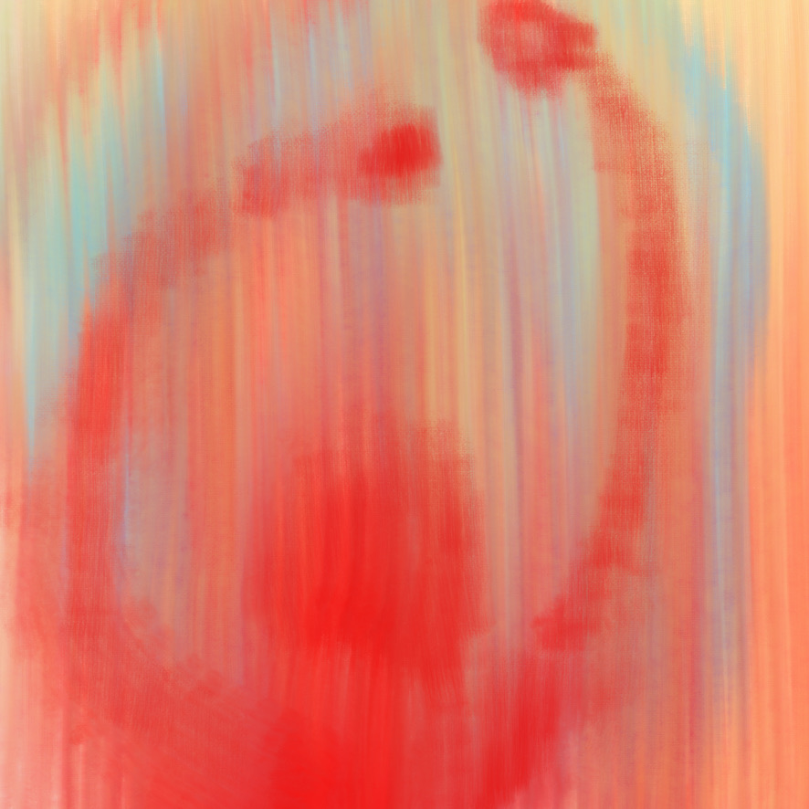
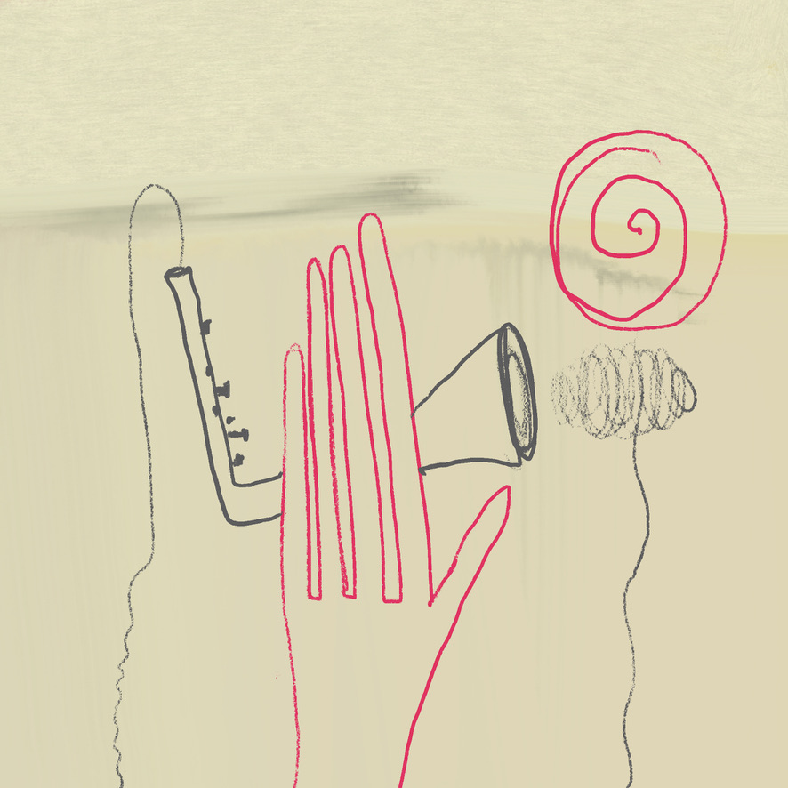
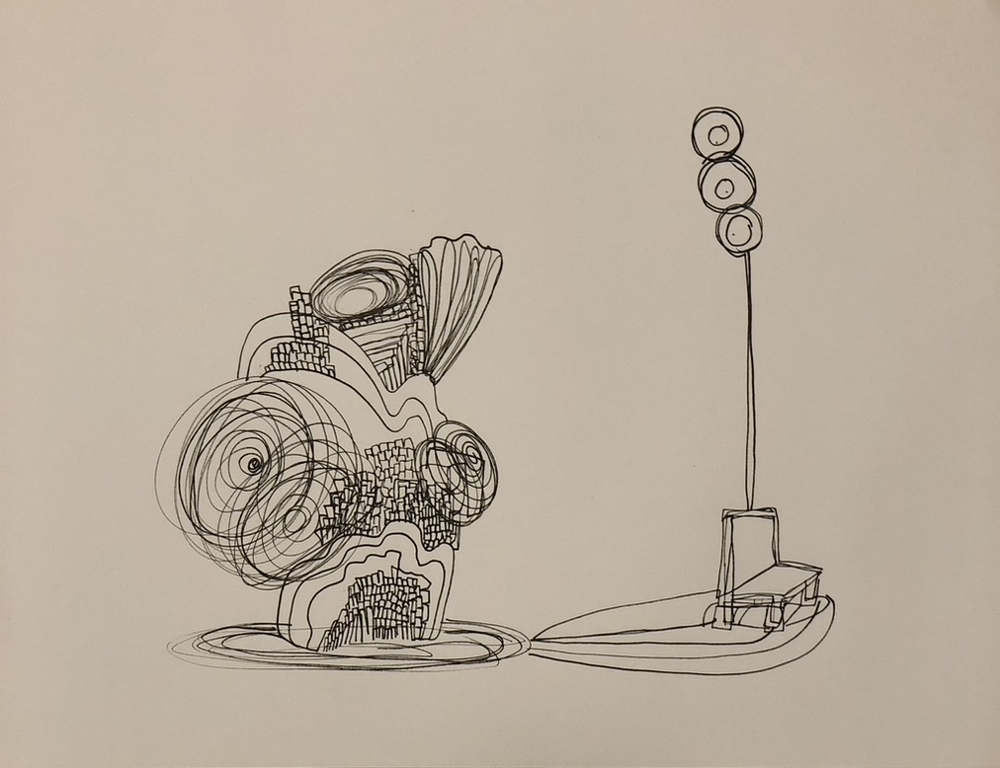
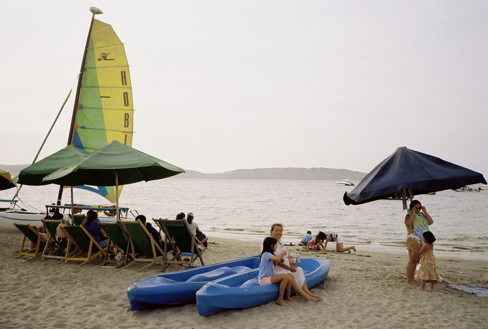
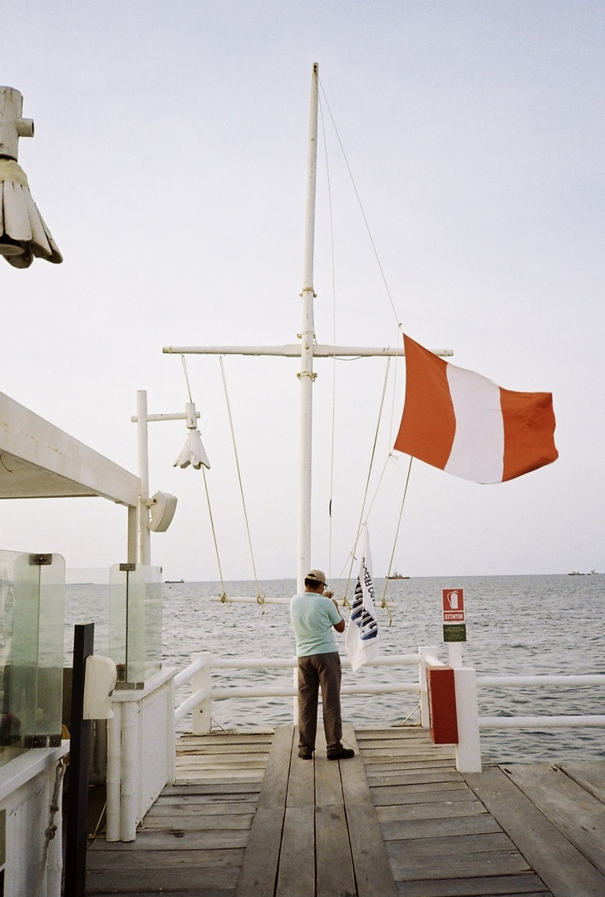
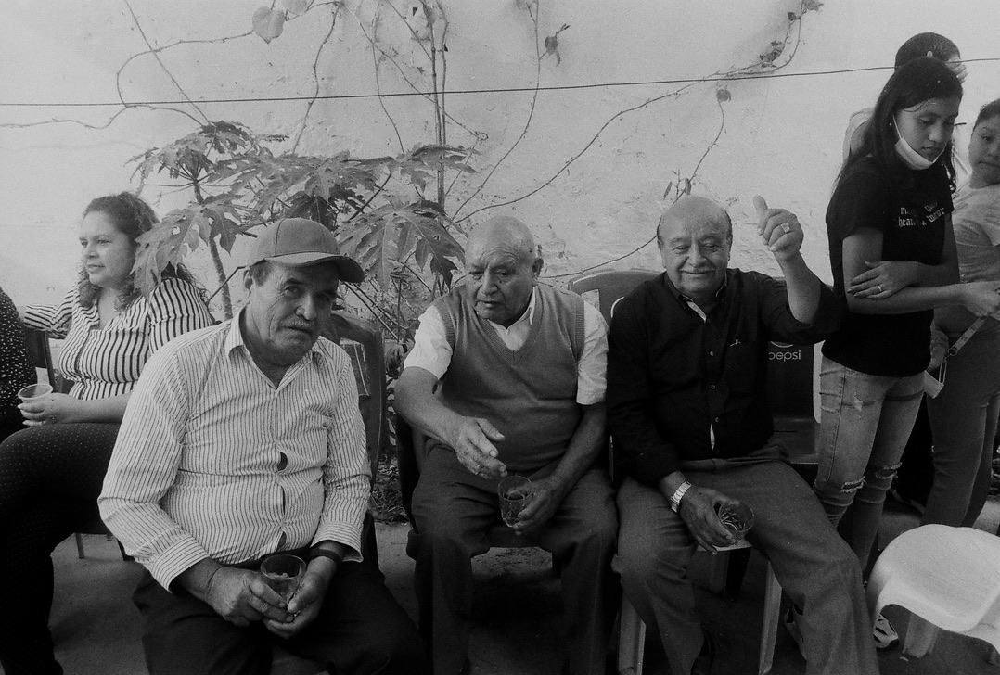
Contact
For research, collaborations, or conversations.